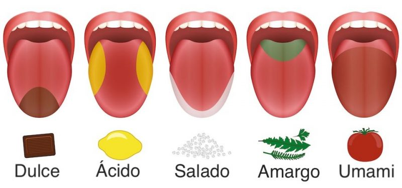

El gusto nos permite saborear los alimentos y las bebidas, dándonos placer y nutriendo nuestro cuerpo.
A través de este sentido, distinguimos sabores como dulce, salado, ácido, amargo y umami, que enriquecen nuestra experiencia culinaria.
El gusto también está profundamente ligado a la memoria, evocando momentos especiales al probar ciertos sabores.
